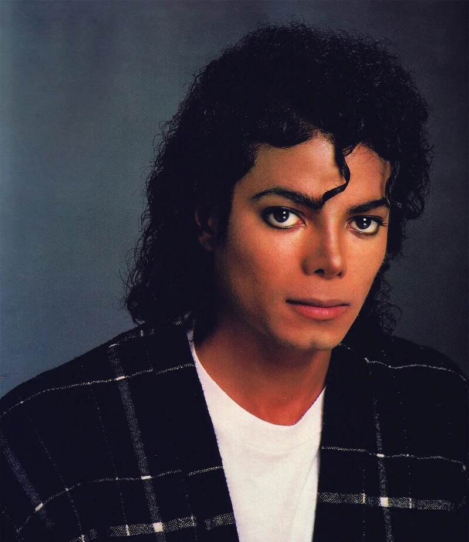

15 Años sin Michael Jackson
Nacido el 29 de agosto de 1958 en Gary, Indiana, Michael comenzó su carrera en la música a una edad temprana con el grupo familiar Jackson 5. Su carisma y habilidades excepcionales pronto lo destacaron como el miembro más prominente del grupo. Sin embargo, fue su carrera en solitario la que lo catapultó a una fama mundial sin precedentes. Con el lanzamiento de "Thriller" en 1982, Jackson no solo alcanzó el éxito comercial, sino que también introdujo un nuevo nivel de arte en los videoclips musicales, con una producción que incluía elementos de cine.
A pesar de su éxito en el mundo entero, la vida de Jackson estuvo llena de controversias y desafíos personales, incluyendo acusaciones y juicios que captaron la atención mundial. Estos aspectos de su vida a menudo opacaban su música, creando una figura pública compleja y a veces dividida.
Muerte del rey del pop
El 25 de junio de 2009, Michael Jackson falleció en Los Ángeles, California, a la edad de 50 años, a causa de una intoxicación aguda por propofol y benzodiazepinas. Su muerte fue declarada un homicidio involuntario, y el médico personal de Jackson, Conrad Murray, fue condenado por ello. La noticia de su muerte conmovió al mundo entero, generando una ola de tributos y un renovado interés en su música y legado.
Años despues de su muerte

Años después de su muerte, Jackson sigue siendo una figura estudiada, venerada y debatida. Su influencia se extiende más allá de la música, tocando aspectos de la moda, la danza y el activismo humanitario. Museos y exposiciones dedicadas a su vida y obra continúan atrayendo a miles de visitantes cada año, y su música sigue siendo un referente de excelencia y creatividad.